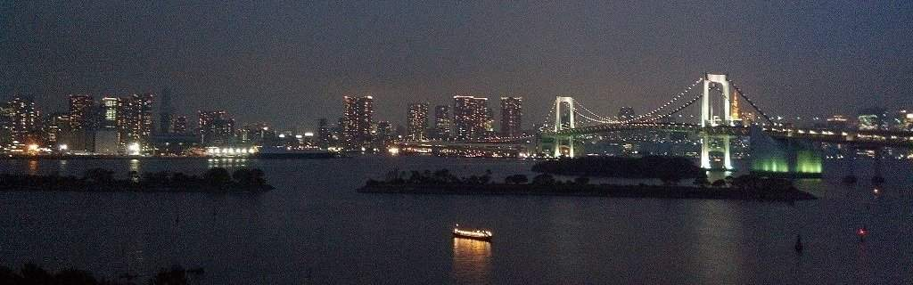
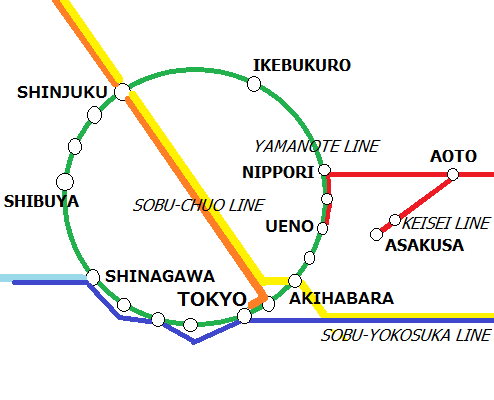
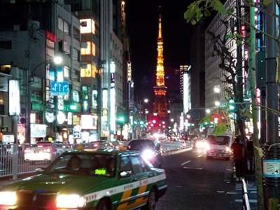

Javascript is required to view this website. Please enable Javascript on your browser.

Tokyo Transport Guide
How to get around in Tokyo
Narita Airport
Narita Airport Terminals: 1, 2, 3
Free Shuttle Bus or Walk
Narita Airport ➔ Tokyo
Overview
Narita Airport ➔ Tokyo by Keisei Line
🕒
Keisei Line Timetable & Route Map Links
Narita Airport ➔ Tokyo by Sobu-Yokosuka Line
✈️→✈️
Narita Airport to Haneda Airport by Direct Train
Haneda Airport
Haneda Airport Terminals: 1, 2, International
Free Shuttle Bus / Walk
Haneda Airport ➔ Tokyo
Overview
Public Transport of Tokyo
IC cards - SUICA & PASMO

Train Network
Most Important Lines
🚇
Metropolitan Tokyo Trains & Subways
🚧🚧🚧
🚕
What About Taxis?
❓
Public Transport Q&A
🚧🚧🚧
About TOKYO

Destinations 🗼
🚧🚧🚧
⛩️
About Asakusa Town
About Tokyo
🚧🚧🚧
About JAPAN
❕
Some Useful Tips & Facts
あ!
Japanese Phrases 📖
for Public Transport
🍣
Food 🍣🍜
⛄
Seasonal Factors
🗾
About Japan
🚧🚧🚧
💭
About this site...